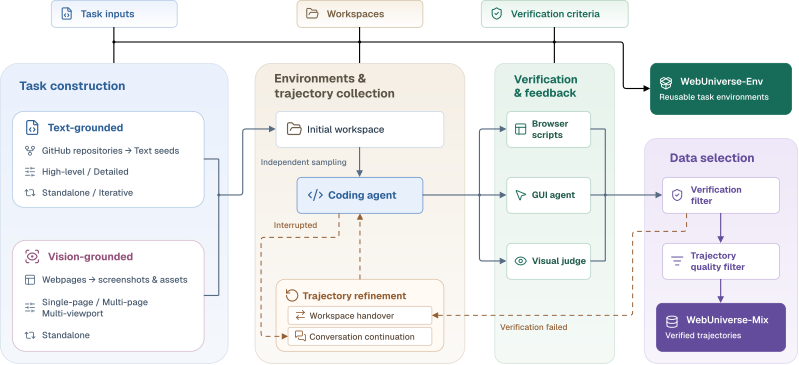
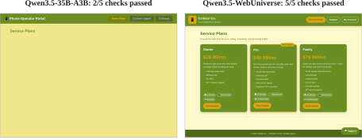

Vision2Web Level 1 average
51.7→68.3
+16.6 score points
Scaling Verified Training Data
for Agentic Web Development
University of Washington
01 / PIPELINE OVERVIEW
WebUniverse pipeline takes open-source repositories and real web pages as inputs and produces WebUniverse-Env (reusable task environments) and WebUniverse-Mix (verified development trajectories).

REAL SOURCES → TASKS
Extract application behavior from repository code and documentation to generate text-grounded tasks. Collect screenshots and supporting assets from real web pages to construct vision-grounded tasks.
02 / DATA & ENVIRONMENTS
Each task has a reusable environment and a verified trajectory.
| Task variant | Tasks |
|---|---|
| Text · standalone | 6,355 |
| Text · iterative | 4,145 |
| Vision · single-page | 1,283 |
| Vision · multi-page | 1,069 |
| Vision · multi-viewport | 2,148 |
| Collection method | Trajectories |
|---|---|
| Independent sampling | 13,026 |
| Trajectory refinement | 1,974 |
03 / TRAINING RESULTS
Model comparisons across three web-development benchmarks, with data scaling and composition ablations.
Vision2Web Level 1 average
+16.6 score points
WebGen-Bench Overall accuracy
+29.4 percentage points
Web-Bench Average pass rate
+8.8 percentage points
Visual reproduction, functional development and iterative development across three benchmarks.
| Model | Vision2WebLevel 1 · Avg. | WebGen-BenchOverall (%) | Web-BenchAvg. (%) |
|---|---|---|---|
| GPT-5.6 Sol | 75.8 | 64.5 | 43.2 |
| MiniMax-M3 | 67.8 | 63.4 | 37.3 |
| DeepSeek-V4-Flash-Vision-Exp | 74.4 | 60.9 | 30.6 |
| Step-3.7-Flash | 69.8 | 62.3 | 33.2 |
| Qwen3.5-27B | 57.7 | 41.6 | 18.3 |
| Qwen3.5-35B-A3B Base model | 51.7 | 34.5 | 9.7 |
| Qwen3.5-StepFun StepFun-Mix · 15K | 52.4 | 31.5 | 13.5 |
| Qwen3.5-WebUniverse WebUniverse-Mix · 15K | 68.3 | 63.9 | 18.5 |
All models are evaluated through OpenCode with fixed benchmark evaluators. Higher is better. Web-Bench Avg. = (pass@1 + pass@2) / 2. The two fine-tuned Qwen3.5-35B-A3B models share the training configuration and 15K sample budget; StepFun-Mix is a selected subset of StepFun’s public SFT data.
Performance improves across all three benchmarks from 5K to 10K to 15K trajectories, with the same mixture proportions and training configuration.
| Training trajectories | Vision2WebLevel 1 · Avg. | WebGen-BenchOverall (%) | Web-BenchAvg. (%) |
|---|---|---|---|
| 0 | 51.7 | 34.5 | 9.7 |
| 5,000 | 63.9 | 49.1 | 14.9 |
| 10,000 | 66.2 | 58.2 | 17.7 |
| 15,000 | 68.3 | 63.9 | 18.5 |
Open markers at 0 denote Qwen3.5-35B-A3B before fine-tuning on WebUniverse-Mix. The charts use different y-axis ranges with nonzero origins.
Text-grounded training primarily improves functional and iterative development. Vision-grounded training improves visual reproduction. The full mixture achieves the best scores across all reported metrics.
| Training data | Vision2WebLevel 1 · Avg. | WebGen-BenchOverall (%) | Web-BenchAvg. (%) |
|---|---|---|---|
| Base model | 51.7 | 34.5 | 9.7 |
| Text-grounded only 10,500 trajectories | 54.1 | 56.1 | 15.8 |
| Vision-grounded only 4,500 trajectories | 63.9 | 12.1 | 6.1 |
| Full mixture 15,000 trajectories · 70:30 text / vision | 68.3 | 63.9 | 18.5 |
All runs start from Qwen3.5-35B-A3B and use the same training configuration.
BENCHMARK EXAMPLES
Qwen3.5-35B-A3B → Qwen3.5-WebUniverse
WebGen-Bench · Task 000020
Original task
Please implement a website for a phone operator to display service plans and provide customer support. The website should have functionalities for displaying service plan details and an online customer support tool. Users should be able browse service plans, get help, manage their account information, and access their personal details. Assign light goldenrod to body backgrounds and olive drab to main components.
Click inside either page. Try plan details, support chat, and account editing. Base interactions remain incomplete.

| Check | Base | WebUniverse |
|---|---|---|
| Test the functionality of the customer support chat tool. | Fail | Pass |
| Validate the ability to browse and view details of a service plan. | Fail | Pass |
| Ensure users can update their account information. | Fail | Pass |
| Test the navigation menu to ensure it includes key sections like "Service Plans," "Customer Support." | Pass | Pass |
| Verify that the website uses 'light goldenrod' as the background color and 'olive drab' as the component color, as specified in the design requirements. | Pass | Pass |
Vision2Web · Level 1 · tefcu